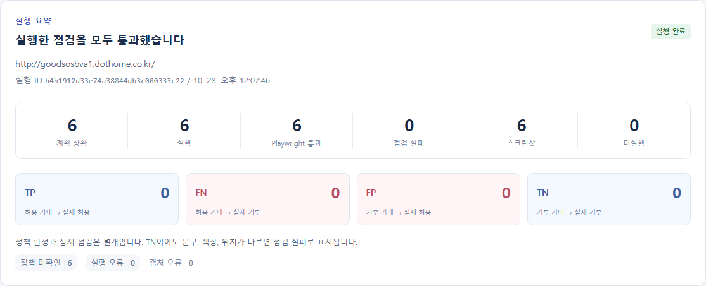

01 / PURPOSE
생성된 테스트의
출처와 결과를 함께 보기
협업에서 테스트를 생성하고 검토할 때, 요구사항의 근거부터 생성된 코드와 실행 결과까지 이어서 확인하는 용도로 사용했습니다. React 화면에서 작업과 실행을 선택하고 근거, 실패 사유와 스크린샷을 확인합니다.
02 / WORKFLOW
근거를 명세와 실행으로 연결하기
- 근거 검색
요구사항의 원문과 출처를 가져옵니다.
- 명세 생성
검색된 근거를 입력으로 테스트할 요구와 출처를 연결합니다.
- 대상 화면 정보 수집과 테스트 코드 생성
대상 화면을 확인하고 Playwright 테스트 코드를 작성합니다.
- Playwright 실행
생성된 테스트를 실행하고 검사 결과와 스크린샷을 남깁니다.
- 결과 집계
실행 성공과 실패, 정책 판정과 미확인 상태를 구분해 보여줍니다.
LangGraph의 다섯 노드로 입력과 출력을 연결합니다. 문서의 근거가 명세와 테스트 코드를 거쳐 실행 결과로 이어집니다.
03 / FRONTEND IMPLEMENTATION
근거와 테스트, 결과를
이어 볼 수 있는 화면
작업과 실행 선택
작업을 선택하고 실행별 진행 상태와 보고서를 확인합니다.
결과의 근거 확인
요구사항 출처와 생성된 테스트, 실패 사유와 스크린샷을 연결해 보여줍니다.
04 / TEST RESULTS
테스트 실행 결과
6계획 / 실행 / 테스트 통과
6정책 판정 미확인
6스크린샷

